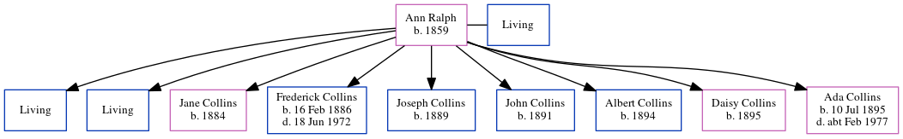

Ann Epps Collins (née Ralph) 1859 -
[ Home ] | [ Calendar ] | [ Surnames Index ] | [ Census Index ] | [ Family History ]Ann Ralph, the wife of William Collins (the first cousin three-times-removed on the father's side of Nigel Horne), was born in Chislet, Kent, England in 18591,2,3 and married William (an agricultural laborer with whom she had 9 children: Charles John, Stephen William, Jane Lancaster, Frederick Alfred, Joseph, John, Albert, Daisy and Ada Mary, along with 2 surviving children) in Dover, Kent, England in 1879.
During her life, she was living at Everden, Swingfield, Kent on Apr 3, 18811; at Chalkshole Green, Alkham, Kent on Apr 5, 18912; and at Everden, Swingfield, Kent on Mar 31, 19013 and on Apr 2, 19114.
Children
- Jane Lancaster was born in 1884
- Frederick Alfred was born on Feb 16, 1886
- Joseph was born in 1889
- John was born in 1891
- Albert was born in 1894
- Daisy was born in 1895
- Ada Mary was born on Jul 10, 1895
Citations
- 1881 England, Wales & Scotland Census - Findmypast (was age 22 and the wife of the head of the household)
- 1891 England, Wales & Scotland Census - Findmypast (was age 32 and the wife of the head of the household)
- 1901 England, Wales & Scotland Census - Findmypast (was age 42 and the wife of the head of the household)
- 1911 Census for England & Wales - Findmypast (was age 52 and the wife of the head of the household)
Family Tree
Generated by ged2site. Last updated on Jun 11, 2024